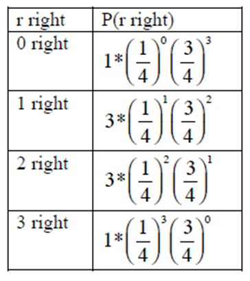
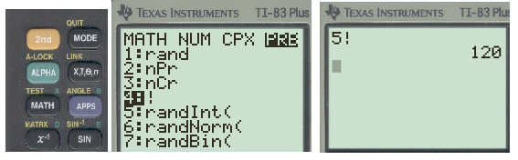
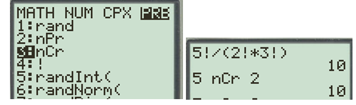
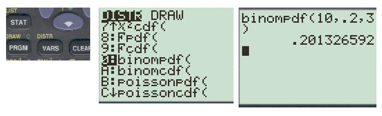
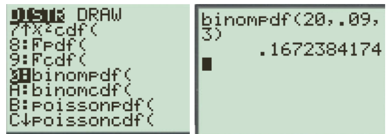

Objectives
At the end of this section you will able to:
-
Determine the conditions of a binomial event.
-
Calculate the probability for binomial event.
-
Calculate the mean and standard deviation for binomial events.

MATH button then use the arrow three times to the right to PRB across the top and then select option 4: !

MATH button and use the arrow three times to the right to PRB across the top and then select option 3:nCr

VARS button on the calculator and above that is the [DISTR] function. So we will use the 2nd button VARS to select [DISTR] and then select option [0] for binomPdf on the TI83. For the TI84 enter [A] for binomPdf. The format for the function is binompdf(n,p,X) where \(n \) is the sample size, \(p \) is the probability of the event, and \(X \) represents how many events.

